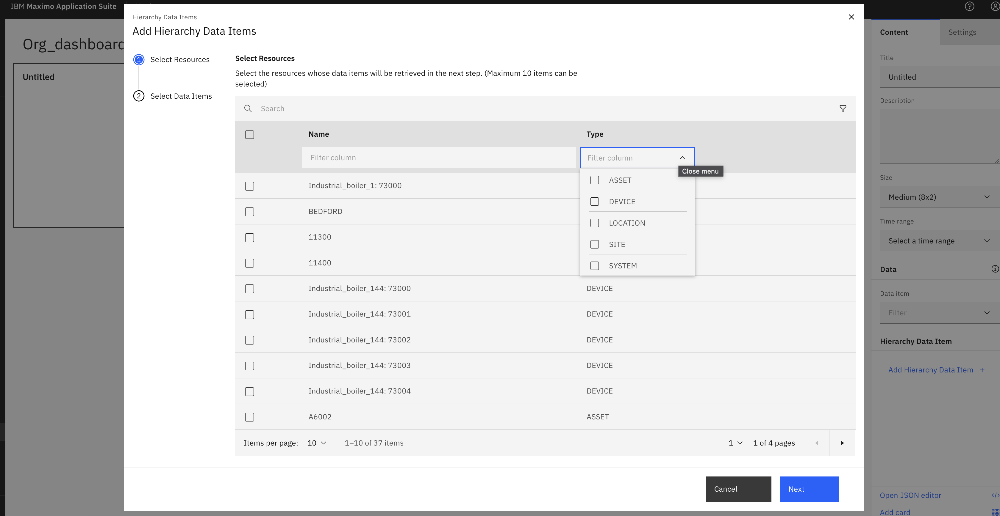
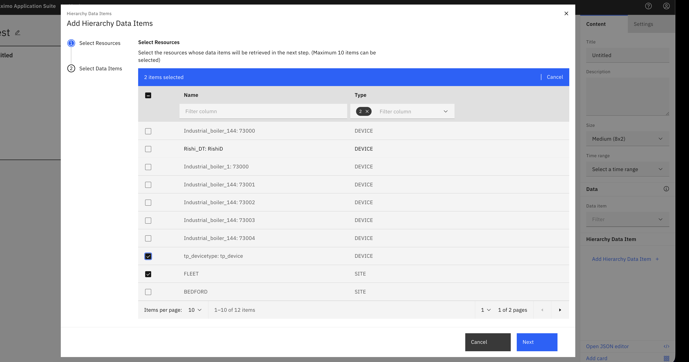
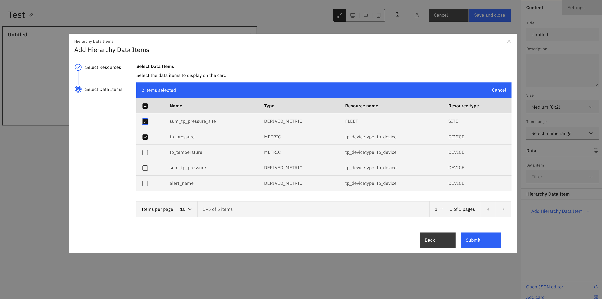
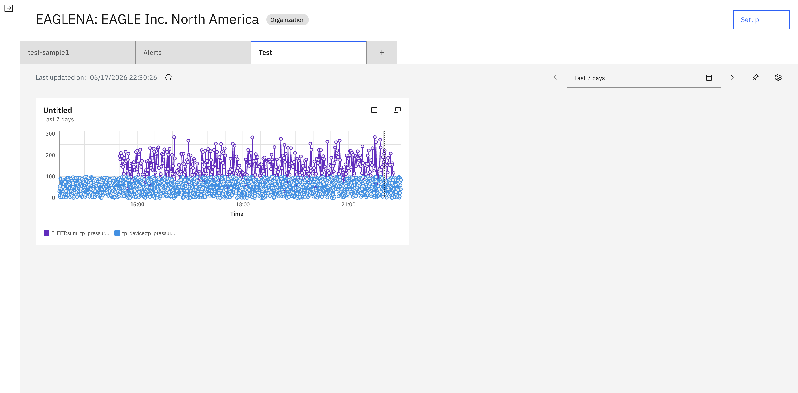

Objectives
In this exercise you will learn how to:
- Understand hierarchy levels in Maximo Monitor
- Create dashboards at Organization
- Select resources from the hierarchy
Overview
Parent-level aggregation works across all hierarchy levels in Maximo Monitor. While the previous exercises focused on Asset-level dashboards, you can create dashboards at any hierarchy level:
Hierarchy Structure:
Organization (Top Level)
└── Site
└── System
└── Location / Asset
└── Device (Bottom Level)
Key Concept
Devices are always assigned to Location or Asset. When creating dashboards at higher levels in hierarchy, inorder to get data, you must ensure that device assugned to location or asset which are present in the hierarchy.
Understanding Hierarchy Levels
Supported Hierarchy Levels for Parent-Level Aggregation:
- Organization - Top-level entity representing your entire organization
- Site - Physical sites within your organization
- System - Logical groupings of assets or locations
- Location - Physical locations where devices are installed
- Asset - Equipment or machinery with assigned devices
Creating Dashboard at Organization Level
Organization-level dashboards provide a comprehensive view of data from your entire organizational hierarchy. This is ideal for executive dashboards and enterprise-wide monitoring.
Create Organization dashboard
-
Goto dashboard tab and select
Add dashboardto configure new dashboard and click onAdd Hierarchy Data Item. Here we can data items from all hierarchy levels.
-
We can use filter option to select data items from specific hierarchy level.

-
We can use filter option to select data items from specific hierarchy level.

-
View selected child resource metrics in card. Likewise we can create similar dashboards using other cards as discussed in previous sectionss.

Success
You have successfully created an Organization-level dashboard that aggregates data from devices across your entire organizational hierarchy!
Important Considerations
Resource Selection
When selecting resources at higher hierarchy levels, you can mix different resource types (Location, Asset, Site) in the same dashboard to get a comprehensive view.
Data Aggregation
Use aggregation functions (sum, average, min, max) to meaningfully combine data from multiple devices across the hierarchy.
🎉 Congratualtions! You have now completed the core exercises for parent-level aggregation.